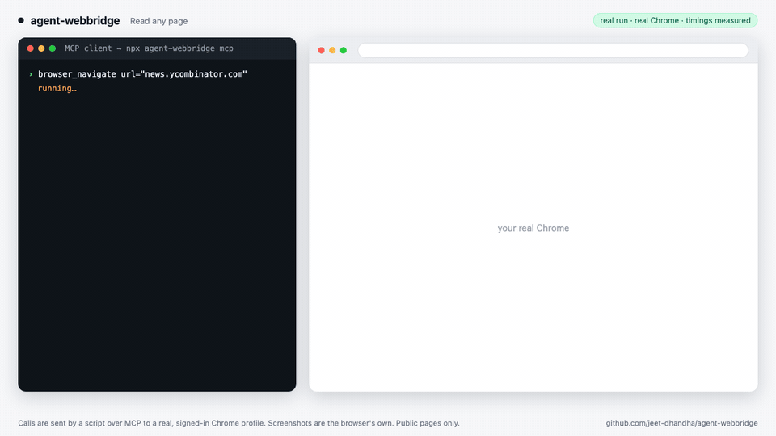
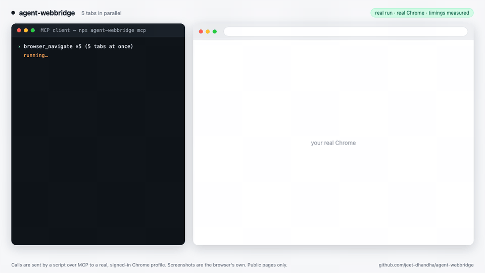
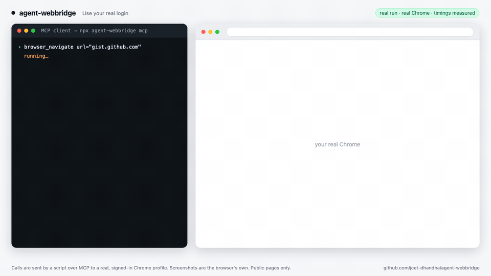
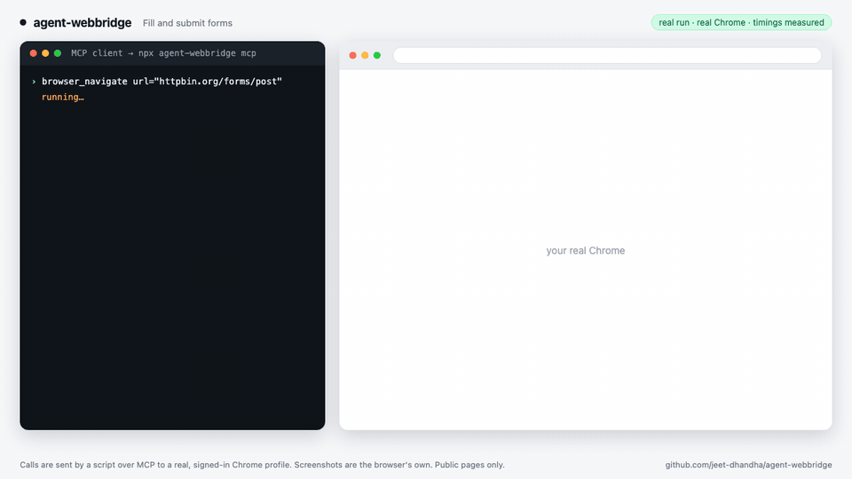

Agent WebBridge (agent-webbridge) is a local browser-automation MCP server for Claude Code, Cursor and other AI apps. It drives the Chrome you already use, so your logins are already there, across several Chrome profiles and several tabs at once. It runs on your computer (127.0.0.1).
Open an AI assistant that can run terminal commands (for example Claude Code or Cursor), paste this, and follow along. You only click “Add to Chrome” yourself.
Please set up agent-webbridge for me so you can use my own Chrome (open source: https://github.com/jeet-dhandha/agent-webbridge). Do these steps one at a time and tell me what you did after each one:
1. Run `node -v`. If it is older than version 18, stop and tell me.
2. Run `npm i -g agent-webbridge`.
3. Run `awb profiles` and ask me which Chrome profile to use.
4. Run `awb setup "<that profile>"`. It opens the Chrome Web Store, so tell me to click "Add to Chrome", then wait for me.
5. Connect yourself with `claude mcp add chrome -- npx -y agent-webbridge mcp`. If you are not Claude Code, show me the MCP config to add instead: {"mcpServers":{"chrome":{"command":"npx","args":["-y","agent-webbridge","mcp"]}}}
6. Run `awb doctor` and tell me what it says.
Ask me before you close or restart Chrome. Do not run anything else. Everything stays on my computer (127.0.0.1).agent-webbridge packageCursor, Claude Desktop or Windsurf: add {"mcpServers":{"chrome":{"command":"npx","args":["-y","agent-webbridge","mcp"]}}} to the MCP settings. Needs Google Chrome and Node.js 18+, on macOS or Windows.
Open https://news.ycombinator.com, read the top 10 stories, and give me a 5-line summary.
Open these 5 pages in separate tabs at the same time and tell me the main difference between them: <url 1> <url 2> <url 3> <url 4> <url 5>
In my Chrome profile "Work", open <the site>, fill in the new-item form with <my details>, and stop before you submit. Show me what you filled in.
Fill the form at <url> with my name, email and message, choose the right options, and do not press submit.
On <url>, attach the file ~/Documents/<file>.pdf to the upload field and tell me when it is attached. Do not submit.
Open <the dashboard> in my "Work" profile and my "Personal" profile and tell me which one has unread alerts.
Real runs, not mock-ups: an AI agent sends MCP calls to npx agent-webbridge mcp, which drives a real, signed-in Chrome profile. Timings are measured live on a MacBook on broadband. Public pages only; nothing is submitted to any account.

@e element references, read from your own signed-in Chrome.

chrome.debugger per tab (a Map keyed by tabId), finishing in 3.5s in parallel versus 9.3s serially.


contenteditable rich text editors via CDP input events.
WebBridge, published as agent-webbridge, is an open-source (MIT) browser-automation MCP server and Chrome extension. It lets AI agents such as Claude Code or Cursor use your own signed-in Chrome profiles, with several tabs and profiles running at the same time. Everything runs on your computer (127.0.0.1).
Not to install it. Paste the setup prompt into an AI assistant that can run terminal commands, such as Claude Code or Cursor. You need Google Chrome and Node.js 18 or newer, and you click "Add to Chrome" yourself. A plain chat window that cannot run commands or connect MCP servers cannot set it up.
It is powerful, so treat it like handing someone your browser. Since version 1.3.1 the bridge refuses requests that come from web pages or from non-local hosts, and versions before 1.3.1 had a security hole, so update. The AI acts as you: watch what it does, ask it to stop before submitting anything important, and use it only on accounts and sites you are allowed to automate.
Any app that supports MCP servers, or that can send HTTP requests to the local router. Setup instructions are written for Claude Code, Claude Desktop, Cursor and Windsurf.
Yes. Each profile gets its own local daemon, and a router sends each request to the profile you name. Inside a profile every tab is controlled separately, so tabs run at the same time. In our benchmark on one MacBook, 5 tabs finished in 3.5 seconds in parallel versus 9.3 seconds one at a time; results vary by machine and site.
Playwright and cloud browsers usually start a fresh browser, so you log in again and deal with 2FA. WebBridge uses the Chrome you already use, so existing sessions are reused. It does not make automation undetectable: sites may still limit automated behavior, and you must follow their terms.
No, there is no recorder yet. You describe the task to your AI, and community recipes (awb-recipes) capture tested steps for specific sites.